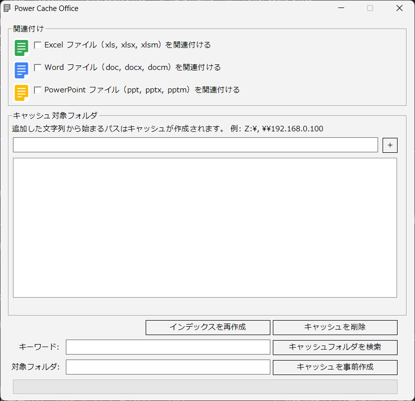
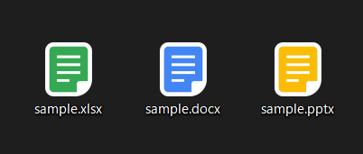
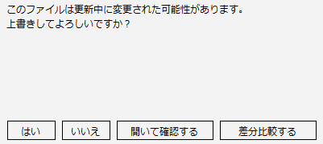

共有フォルダのOfficeファイルが、重くてなかなか開けなかった経験はありませんか？
やっとの思いで開いたファイルが、使用中で更新できなかったことは？
検索に時間がかかり、探しているファイルが見つからなかったことは？
「Power Cache Office」はこれらの問題を解決します。
以下が「Power Cache Office」の画面構成です。
各機能の使い方を説明していきます。

ダークモード・ライトモードを切り替えます。
本アプリの更新を確認します。
チェックを入れた拡張子が「Power Cache Office」で開くように関連付けを行います。
特に理由がなければ、すべてチェックを入れてください。
チェックを入れるとOfficeファイルを開く際「常に使う」アプリに「Power Cache Office」が選択可能になります。
常に使うアプリに設定し、アイコンが変更されれば完了です。
うまくいかない場合は、PCを一度再起動してみてください。

キャッシュ作成する（ローカルPCにコピーを作成する）フォルダを指定します。
共有フォルダや、外付けハードディスクのパスを指定してください。
テキストボックスにパスを入力し「＋」ボタンを押すと追加されます。
追加したパスを削除する場合、選択して「Delete」キーを押すか、右クリックして「削除」を押してください。
以下の機能をホットキーに登録します。
ホットキーを変更するには、テキストボックス上で登録したいキーを押してください。
チェックを入れると、PC起動時に本アプリを起動します。
チェックを入れると、本アプリからファイルを開く際に（未作成であれば）ファイルのコピーを取得します。
コピーが未作成かどうかは、タイムスタンプで判定されます。
チェックを入れると、本アプリの再起動時にキャッシュ（ローカルのコピー）をすべて削除します。
検索等はできなくなりますが、ローカルにファイルを残したくない場合、チェックを入れてください。
ホットキーの「最近開いたファイルを表示」と同じ機能です。
キャッシュとリモートの関係を再作成します。
リモートのOfficeファイルが、うまく開けなくなった場合に実施してください。
バックアップ（開いたファイルのコピー）をすべて削除します。
PCの容量が不足した場合等に実施してください。
キャッシュをすべて削除します。
インデックスを再作成しても、リモートのOfficeファイルがうまく開けない場合や、PCの容量が不足した場合等に実施してください。
キーワードを入力してボタンを押すと、バックアップを対象に検索を実施します。
キーワードを入力してボタンを押すと、キャッシュを対象に検索を実施します。
対象フォルダを入力してボタンを押すと、フォルダにあるOfficeファイルをローカルにコピーします。
以下の2点に注意して実施してください。
PowerCacheOfficeSetup.msi を実行してインストールします。
アプリを実行するとタスクトレイに常駐します。
タスクトレイのアイコンをクリックして画面を開き、各種設定を実施してください。
設定後は最小化すると、タスクトレイに常駐して動作し続けます。
自分がファイルを編集中に、他の人がそのファイルを更新した場合、差分を「ツールで確認する」ことができます。
なお、単に「開いて確認する」ことも可能なので、ツールを使わずOfficeの「ファイルの比較」機能も利用できます。

ここでは例として、差分比較ツールに「WinMerge」を使う方法を解説します。
差分比較ツールは方眼Diff等、WinMerge以外を使うこともできます。
本アプリは以下どちらかにExcel、Word、PowerPointがインストールされている前提で動作します。
それ以外の場所にインストールされている場合、Excel、Word、PowerPointの場所を指定します。
LibreOffice等を使用している場合も、同様に場所を指定してください。
Windowsの設定からアンインストールします。
また以下のフォルダを必要に応じて削除します。
%LOCALAPPDATA%\PowerCacheOffice
上記フォルダにはキャッシュ、バックアップ、及び本アプリの設定が保存されています。
アンインストール後に再インストールする場合は、削除しないでください。
本アプリは、MIT ライセンスで提供されます。
本アプリに関するご連絡は、こちらまでお願いいたします。